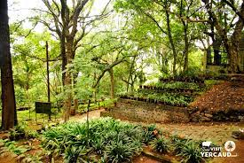
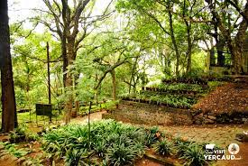

Explore Yercaud!
It is located in the Shevaroys range of hills in the Eastern Ghats. The highest point in Yercaud is the Servarayan temple, at 5,326 feet.
Yercaud Lake has a boathouse, and is surrounded by gardens and woods. On the lake’s eastern shore, Anna Park has local
plants and a Japanese garden with bonsai. To the southwest, Lady’s Seat vantage point has a watchtower with a telescope.


 



Deals For You!
Grand Palace Hotel and Spa Yercaud
GRT Hotels
Hotel Happy Nest